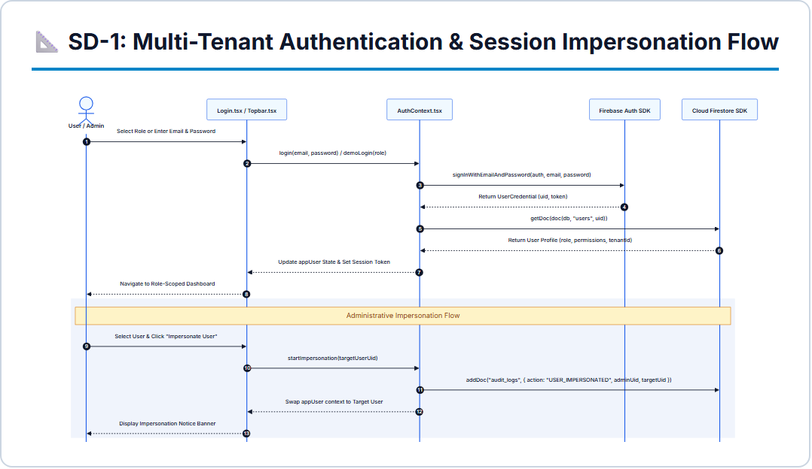
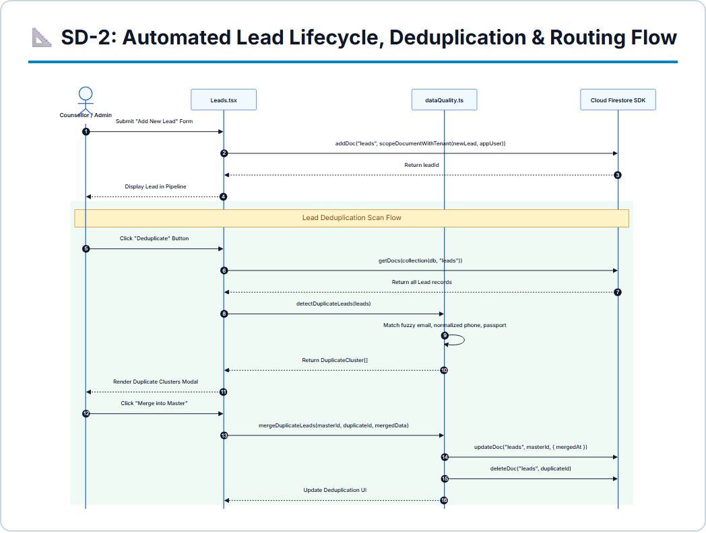
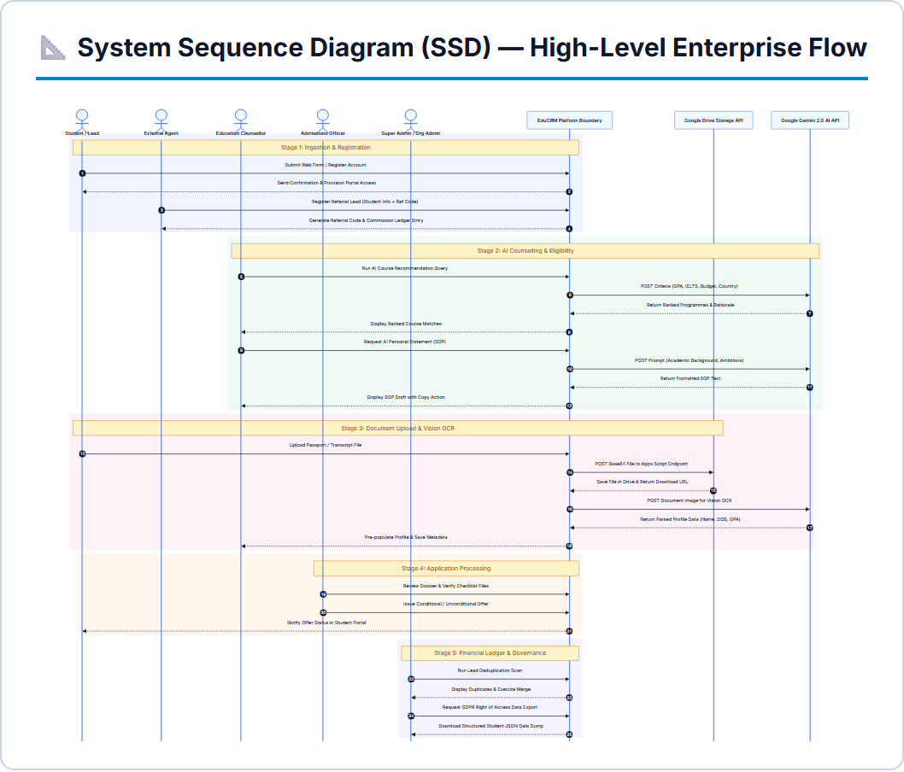
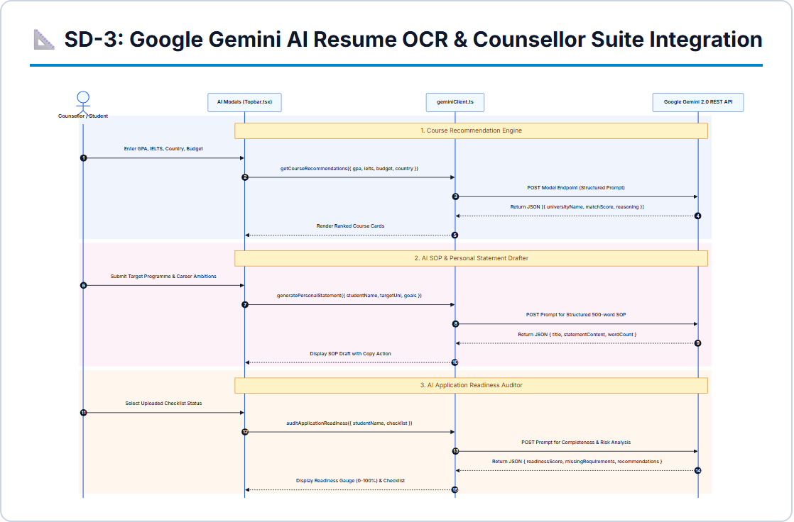
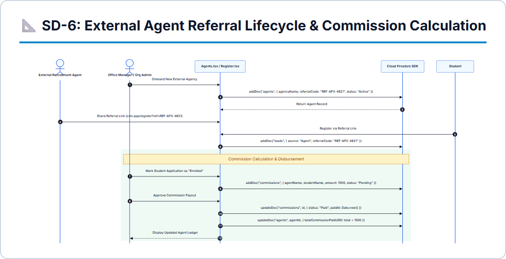

🏛️
Capital University of Science & Technology
Islamabad, Pakistan
Summer Internship Report
Design and Implementation of EduCRM: An Enterprise Multi-Tenant Platform for Education Consultancy and Student Admissions Lifecycle Management
1. Document Control
| Item |
Details |
| Report Title |
Internship Progress Report — Comprehensive Education CRM and Student Application Lifecycle Management Platform (EduCRM) |
| Student Name |
Mujtaba Zaheer |
| Registration No. |
[BSE21XXXX / Enter Your Reg No] |
| Degree Program |
Bachelor of Science in Software Engineering (BSSE) |
| Department |
Department of Software Engineering |
| University |
Capital University of Science and Technology (CUST), Islamabad |
| Host Organization |
[Enter Host Organization / e.g., EduGlobal Solutions / Yuni (SMC-Pvt) Limited] |
| Internship Position |
Full-Stack Software Engineering Intern |
| Internship Start Date |
[03 August 2026 / Enter Start Date] |
| Internship Duration |
Six (6) Weeks |
| Internship Course |
SE4100 - Software Engineering Internship |
Table of Contents
- 1. Document Control ................................................................................................................................ 2
- 2. Executive Summary ........................................................................................................................... 4
- 3. Acknowledgement ............................................................................................................................ 4
- 4. Introduction ....................................................................................................................................... 5
- 4.1 Internship Overview ...................................................................................................................... 5
- 4.2 Internship Objectives .................................................................................................................... 5
- 4.3 Role and Responsibilities .............................................................................................................. 5
- 5. Organization Overview ...................................................................................................................... 6
- 5.1 Host Organization Profile ............................................................................................................ 6
- 5.2 Internship Environment and Agile Workflow ................................................................................. 6
- 6. Technical Areas and Tools ................................................................................................................. 6
- 7. Detailed Internship Progress .............................................................................................................. 7
- 7.1 Week 1 – Multi-Tenant Architecture, Security Rules & RBAC Foundation .................................... 7
- 7.2 Week 2 – Lead Lifecycle, Dynamic Form Builder & Intelligent Routing ....................................... 8
- 7.3 Week 3 – Student Self-Service Portal & Application Lodgement Wizard ....................................... 9
- 7.4 Week 4 – The 20-Stage Application Pipeline & Departmental Desks ........................................... 10
- 7.5 Week 5 – AI Counsellor Suite Integration & Document Intelligence ............................................. 12
- 7.6 Week 6 – Partner Agent Network, Commission Engine & Comprehensive QA ............................. 13
- 7.7 System Verification, Performance Optimization, and Technical Documentation .......................... 14
- 8. Learning Outcomes and Skills Developed ........................................................................................ 14
- 8.1 Technical Skills ............................................................................................................................. 14
- 8.2 Software Engineering Methodologies ........................................................................................... 14
- 8.3 Professional & Collaborative Competencies ................................................................................ 15
- 9. Challenges and Problem-Solving ..................................................................................................... 15
- 10. Professional and Workplace Development ..................................................................................... 16
- 11. Conclusion .......................................................................................................................................... 16
- 12. Annexure A: Internship Offer Letter ............................................................................................... 17
- 13. Annexure B: Completion Certificate .............................................................................................. 18
- 14. Annexure C: Internship Evaluation Form ......................................................................................... 19
2. Executive Summary
This internship progress report documents the engineering achievements and technical competencies developed during a six-week professional Software Engineering internship. The role was formally designated as Full-Stack Software Engineering Intern, focused on architecting and delivering EduCRM, a modern, multi-tenant Education Customer Relationship Management (CRM) and Student Application Lifecycle Management Platform.
International student recruitment and university admissions operations are historically plagued by fragmented spreadsheets, manual document verification bottlenecks, lack of role clarity between counselling, admissions, finance, and visa teams, and slow turnaround times. EduCRM was conceptualized and developed to solve these operational pain points through a unified, cloud-native web application built using React 19, TypeScript, Tailwind CSS, Vite, and Google Firebase (Authentication, Cloud Firestore, and Cloud Storage), augmented with an AI Counsellor Suite powered by the Google Gemini API.
The internship was structured into systematic, goal-oriented engineering sprints:
- Week 1: Multi-tenant architectural setup, 13-role access control (RBAC), and declarative Firestore security rules.
- Week 2: Dynamic Form Builder, public inquiry endpoints, lead scoring heuristics, and workload-balanced routing.
- Week 3: Student self-service onboarding portal, academic profiling, and dynamic application submission wizard.
- Week 4: Core 20-stage application pipeline, departmental desks (Counselling, Admissions, Finance, Visa), and 1-click approvals.
- Week 5: AI Counsellor Suite, client-side PDF/DOCX parsing (PDF.js, Mammoth), Gemini API extraction, and zero-cost storage.
- Week 6: Partner Agent network, tiered commission calculations, automated Vitest and Playwright test suites, and production deployment on Firebase Hosting.
Overall, the internship provided extensive practical exposure to real-world cloud architectures, distributed reactive state management, asynchronous data streams via Firestore real-time listeners, rigorous automated software testing, and enterprise access governance.
3. Acknowledgement
I would like to express my sincere appreciation to my industry supervisor and the software engineering team at the host organization for providing me with the opportunity to undertake this professional internship in Full-Stack Web Engineering. Their technical mentorship, constructive code reviews, and continuous guidance were instrumental in shaping the architecture of EduCRM.
I am equally indebted to the Department of Software Engineering at Capital University of Science and Technology (CUST), Islamabad, for providing a robust academic foundation that enabled me to connect software design patterns, database architecture, and security principles with high-impact industry applications.
Finally, I extend my heartfelt thanks to all team members and peers whose collaborative spirit and technical discussions made this internship an invaluable learning experience.
4. Introduction
4.1 Internship Overview
The internship was undertaken as part of the compulsory SE4100 Software Engineering Internship course under the Department of Software Engineering, Capital University of Science and Technology (CUST). The program bridges academia and industry by immersing students in high-velocity software engineering teams to solve complex, real-world problems.
The primary project assigned during this tenure was EduCRM—an enterprise-grade education consultancy and admissions management software platform. The system is engineered to digitize the complete lifecycle of international student recruitment, encompassing prospective lead intake, automated document ingestion, university matching, conditional/unconditional offer issuance, tuition deposit processing, visa filing, and agent commission settlement.
4.2 Internship Objectives
- Enterprise Architecture Application: Implement clean, modular, and maintainable software architecture using modern React 19, TypeScript, and functional programming patterns.
- Granular Security & Multi-Tenancy: Engineer robust Role-Based Access Control (RBAC) and tenant isolation rules in Cloud Firestore to enforce strict data privacy across competing education agencies.
- State Machine & Pipeline Engineering: Design a deterministic 20-stage application progression state machine with validation gates preventing premature or unauthorized status transitions.
- Artificial Intelligence Integration: Integrate the Google Gemini generative AI API to automate CV data extraction, match candidate profiles with academic prerequisites, and reduce counsellor administrative overhead.
- Quality Assurance & Verification: Establish comprehensive automated test coverage spanning unit tests (Vitest) and end-to-end browser journeys (Playwright).
- Professional Engineering Practices: Adhere to version control protocols (Git), sprint estimation, technical documentation, code reviews, and production release management.
4.3 Role and Responsibilities
- Architect frontend views, component libraries, and custom React hooks for reactive state management.
- Write and test Firebase Security Rules (
firestore.rules and storage.rules) to prevent unauthorized document reads and privilege escalation.
- Build domain-specific workspaces for Counsellors, Admissions Officers, Finance Officers, and Visa Officers.
- Implement student self-service onboarding and application submission workflows.
- Integrate external RESTful services, including Google Gemini AI endpoints and file conversion parsers.
- Profile performance, resolve layout regressions across mobile and desktop viewports, and generate comprehensive architecture specifications and UML sequence diagrams.
5. Organization Overview
5.1 Host Organization Profile
The host organization operates at the forefront of digital transformation, cloud application development, and software engineering consulting. With a focus on educational technology and automated enterprise workflows, the engineering division builds scalable, secure, and intuitive platforms designed to modernize business operations for global consultancy agencies and academic partners.
The company promotes a culture of technical ownership, clean coding practices, and continuous learning, providing interns with direct immersion into modern full-stack web architectures.
5.2 Internship Environment and Agile Workflow
The internship was conducted in a modern, agile software development environment utilizing a hybrid structure. Development was guided by weekly sprint backlogs, daily standups, code reviews, and automated verification before staging deployment.
6. Technical Areas and Tools
| Area |
Tools & Services |
Application in EduCRM |
| Frontend Core |
React 19, TypeScript, Vite |
Reactive single-page application, strict static typing, and lightning-fast build pipeline. |
| Styling & Design |
Tailwind CSS v4, Lucide React |
Component design system, responsive grids, dark/light accents, and color-coded departmental badges. |
| Cloud Database |
Google Cloud Firestore |
NoSQL real-time document storage for organizations, leads, applications, and audit logs. |
| Authentication |
Firebase Auth & Custom Claims |
Email/password login, email verification, multi-tenant role tokens, and session handling. |
| Storage Service |
Firebase Cloud Storage |
Encrypted storage for passports, transcripts, offer letters, fee challans, and visa grants. |
| Artificial Intelligence |
Google Gemini API (REST) |
CV/Resume automated parsing, field extraction, SOP evaluation, and programme matching. |
| Client Ingestion |
PDF.js, Mammoth.js |
Browser-side text extraction from PDF and Word documents prior to LLM processing. |
| Data Visualization |
Recharts |
Conversion funnels, monthly trends, counsellor workload, and commission dashboards. |
| Automated QA |
Vitest, Playwright |
Unit testing of RBAC authorization rules and end-to-end browser journeys. |
| Hosting & CI |
Firebase Hosting, Vercel |
SSL-certified production cloud hosting and global edge CDN caching. |
7. Detailed Internship Progress
7.1 Week 1 – Multi-Tenant Architecture, Security Rules & RBAC Foundation
The opening week established the architectural bedrock of EduCRM. The primary engineering goal was ensuring multi-tenant data segregation—enabling multiple independent education consultancy agencies to operate on the same system without risking cross-organization data leakage.
- Engineered normalized schemas for
organizations, users, leads, students, applications, and universities.
- Formulated 13 distinct user roles with strict hierarchy (Platform Super Admin down to Student and Support User).
- Wrote declarative security rules in
firestore.rules enforcing tenant boundaries (request.auth.token.orgId == resource.data.orgId).
- Engineered
AuthContext.tsx and RoleRoute.tsx for reactive route guarding and session sanitization.

Figure 1: Multi-tenant authentication lifecycle, token validation, and security access gates.
Where to take this picture: Open your Google Firebase Console in the browser (
console.firebase.google.com) → navigate to
Cloud Firestore.
What it must show: Capture the Database tab displaying root collections (
organizations,
users,
applications,
leads) and the document structure panel on the right.
7.2 Week 2 – Lead Lifecycle, Dynamic Form Builder & Intelligent Routing
Week 2 focused on student acquisition. International education consultancy depends heavily on high inquiry volumes. We engineered an embeddable Form Builder and an automated lead intake pipeline.
- Built a dynamic drag-and-drop form creator (
FormBuilder.tsx) allowing admins to publish custom inquiry forms.
- Implemented public form endpoints (
PublicFormPage.tsx) for anonymous prospective applicants.
- Programmed algorithmic lead scoring heuristics (
LeadScoringConfig.tsx) rating applicant readiness from 0 to 100 based on IELTS/PTE scores and academic standing.
- Engineered an automated deduplication service matching email and phone records to prevent duplicate counsellor outreach.

Figure 3: Lead acquisition lifecycle, algorithmic scoring, and automated deduplication architecture.
Where to take this picture: Run EduCRM locally (npm run dev) → log in as Admin → navigate to /form-builder or open a generated public form link (/forms/:formId).
What it must show: The drag-and-drop form field configuration panel alongside the live preview of the prospective student inquiry form.
7.3 Week 3 – Student Self-Service Portal & Application Lodgement Wizard
Week 3 transitioned applicant interaction from manual counsellor entry to self-service digital onboarding.
- Developed multi-stage onboarding flows (
StudentOnboardingStage1.tsx, Stage3.tsx) capturing personal, academic, and language test records.
- Constructed the self-service application lodgement form (
StudentNewApplication.tsx), allowing students to select target universities and programmes.
- Engineered the reactive student dashboard (
RolePortal.tsx) displaying live stage progress meters and document checklists.
Where to take this picture: Log in as a registered student → navigate to /student/dashboard.
What it must show: The student dashboard showing profile completeness percentage, active applications list, and pending document upload notifications.
Where to take this picture: In the student portal, click "New Application" or open /student/new-application.
What it must show: The application submission form displaying University dropdown, Programme selector, target intake, and document upload drag-and-drop zone.
7.4 Week 4 – The 20-Stage Application Pipeline & Departmental Desks
Week 4 delivered the system's core capability: an end-to-end 20-stage application pipeline orchestrated across four specialized departmental desks with strict role permissions.
- Enforced the complete 20-stage state machine in
stageAuthorization.ts across Counselling, Admissions, Finance, and Visa desks.
- Engineered
canUserSetStage guards preventing staff from transitioning stages outside their department.
- Built the Admissions Desk (
/admissions) with 1-click offer letter issuance that automatically routes files to Finance for tuition fee challan generation.
- Created the Finance Desk (
/finance) for deposit challans and payment clearance, and the Visa Desk for CAS tracking and embassy lodgement.

Figure 7: System Sequence Diagram (SSD) demonstrating inter-desk handoffs across Counselling, Admissions, Finance, and Visa desks.
Where to take this picture: Log in as Counsellor / Admin → navigate to /applications.
What it must show: The horizontal Kanban view showing application cards organized by stages: Draft, Initial Review, Conditional Offer, Deposit Paid, Visa Approved.
Where to take this picture: Navigate to /admissions → click on an application awaiting university decision → open ApplicationDetailModal.
What it must show: The modal showing student credentials and the prominent "Issue Conditional Offer" / "Issue Unconditional Offer" 1-Click action button.
7.5 Week 5 – AI Counsellor Suite Integration & Document Intelligence
Week 5 integrated generative artificial intelligence to minimize manual data entry and expedite application processing.
- Integrated
pdfjs-dist and mammoth.js for client-side text extraction from student resumes and transcripts.
- Formulated structured prompts for the Google Gemini API (
gemini-1.5-flash) extracting candidate name, GPA, education history, and test scores in JSON.
- Engineered rate-limiting wrappers and debounce timers (reducing request spam and preventing HTTP 429 quota exhaustion).
- Designed a zero-cost cloud storage fallback pipeline supporting direct Google Drive links.

Figure 10: Component Sequence Diagram illustrating client-side parsing, Gemini LLM extraction, and profile auto-fill.
Where to take this picture: Open the "AI CV Auto-Fill" modal on the applicant registration or new application page → upload a sample CV.
What it must show: The uploaded CV preview, the AI parsing status indicator, and the extracted form fields populated with candidate information.
7.6 Week 6 – Partner Agent Network, Commission Engine & Comprehensive QA
The final sprint focused on business ecosystem integrations, financial settlement automation, rigorous test automation, and cloud deployment.
- Built the External Agent Portal (
Agents.tsx) allowing recruitment partners to submit referrals and track status.
- Implemented the automated commission engine (
CommissionManager.tsx) computing tier-based payouts upon student enrolment.
- Authored automated test suites with Vitest (unit authorization logic) and Playwright (end-to-end browser journeys).
- Configured production bundling in Vite and deployed the live system onto Firebase Hosting.

Figure 12: Partner Agent Network and Automated Commission Disbursement sequence architecture.
Where to take this picture: Open your terminal in the CRM project root → run npm run test:unit followed by npx playwright test.
What it must show: The command prompt displaying green passing checkmarks across all test files and the completed test summary.
8. Learning Outcomes and Skills Developed
8.1 Technical Skills
- Modern Single-Page Web Applications: Gained deep mastery of React 19 functional programming, custom hooks, and strict TypeScript interfaces.
- NoSQL Architecture & Real-Time Data: Developed practical expertise in designing Cloud Firestore collection models, indexing, and real-time subscription streams via
onSnapshot.
- Cloud Security Engineering: Mastered the authoring of declarative security rules enforcing tenant segregation and role claims.
- Generative AI & LLM Ingestion: Understood practical prompt engineering, JSON schema formatting, and client-side document preprocessing.
- Automated Test Automation: Proficient in authoring end-to-end browser tests in Playwright and unit test suites in Vitest.
8.2 Software Engineering Methodologies
- State Machine Modeling: Translated complex business requirements into a deterministic 20-stage state machine with strict transition guards.
- Defensive Programming: Applied runtime validation, safe error boundaries, and debounce techniques.
- Performance Profiling: Audited listener lifecycles to prevent memory leaks and optimized bundle chunking.
8.3 Professional & Collaborative Competencies
- Agile Sprint Execution: Enhanced time estimation, task decomposition, and milestone delivery.
- Technical Documentation: Developed proficiency in writing comprehensive architectural specifications and UML diagrams.
- Compliance Mindset: Gained appreciation for data protection regulations (GDPR), audit trails, and student confidentiality.
9. Challenges and Problem-Solving
1. Granular RBAC Across 20 Application Stages: In large consultancies, counsellors must not issue offers, and admissions staff must not clear payments. Solved by creating a central authorization mapping (stageAuthorization.ts) paired with server-side Firestore security rules.
2. AI Rate Limiting & Quota Management: Rapid uploads occasionally triggered HTTP 429 rate limit exceptions. Resolved by pre-extracting pure text client-side via pdfjs-dist and enforcing an 8-second debounce lock with user-friendly loading feedback.
3. Heavy Document Uploads: High-resolution certificate scans risked exhausting storage quotas. Solved by introducing client-side file compression and a zero-cost Google Drive link attachment mechanism.
4. Real-Time Listener Memory Leaks: Multiple simultaneous Firestore subscriptions caused browser memory bloat on rapid route transitions. Solved by conducting a listener audit and ensuring all unsubscribe callbacks execute in React cleanup hooks.
10. Professional and Workplace Development
The internship provided significant growth beyond coding. It cultivated technical independence, the ability to read and interpret complex requirements, and a deep appreciation for building reliable, production-ready software. Collaborating with senior engineers reinforced the importance of code reviews, documentation hygiene, and automated testing before delivery.
11. Conclusion
The six-week internship provided an invaluable practical bridge between university software engineering theory and commercial product engineering. Through the design, development, and testing of **EduCRM**, I contributed to an enterprise cloud platform that streamlines student admissions, accelerates inter-desk handoffs, and leverages artificial intelligence to reduce operational overhead.
This experience has strengthened my full-stack development skills, reinforced professional software engineering discipline, and prepared me to deliver substantial value in future engineering endeavors.
Mujtaba Zaheer
Student / Software Engineering Intern
Reg No: [BSE21XXXX]
Department of Software Engineering
Capital University of Science & Technology
[Industry Supervisor Name]
Chief Technology Officer / Tech Lead
[Host Organization Name]
Official Stamp & Signature
12. Annexure A: Internship Offer Letter
📄
Insert a clear scan or PDF export of your official Internship Offer Letter here.
Ensure that your name, duration (6 weeks), start date, and company stamp/signature are clearly visible.
13. Annexure B: Completion Certificate
🏆
Insert the official Certificate of Completion awarded by your host organization.
Confirm that it shows your name, role as Tech Team / Software Engineering Intern, date of issuance, and official seal.
14. Annexure C: Internship Evaluation Form
📋
Insert the official Capital University of Science and Technology (CUST) Department of Software Engineering Evaluation Form filled and signed by your supervisor.
Must include performance scores (0–10 scale), project completion checkbox (>80%), and supervisor comments.